本ページでは、「elmo」の導入方法(Windows版)を記載しています。
elmoのシステム要件は実行する将棋エンジン(以下、やねうら王を利用しています)と同様となりますが、快適に動作するために以下環境を推奨します。
(※)現状のコンピュータ将棋プログラムは64bitOSを前提に作成されており、32bit版は本ページで紹介する方法では利用することができません。
elmoは評価関数(と定跡)に独自性を持つプログラムであり、それ以外の部分は既存プログラムを利用しています。やねうら王を利用する方法を説明します。
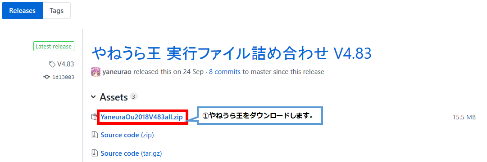
適当なところに保存し、zipファイルを展開してください。以下のようにzipファイルが展開出来ていれば問題ありません。※下記は「表示」→「詳細」を選択している時の表示となります。同じ名前のファイルがあれば問題ありません。
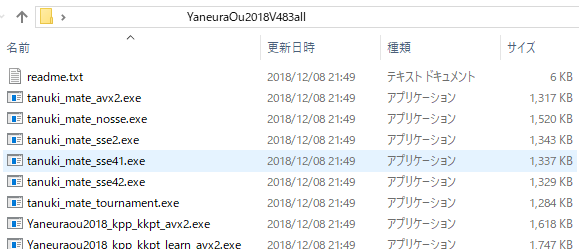
以下では2017年の世界コンピュータ選手権版にて説明します。
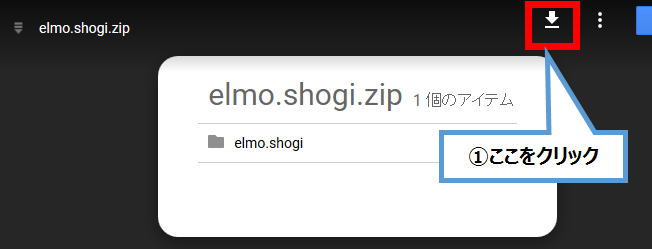
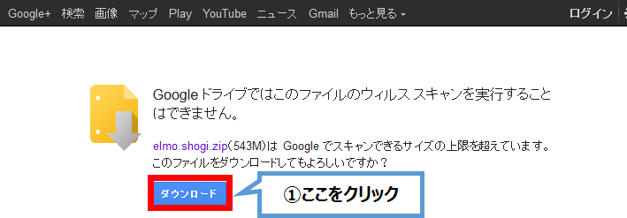
ファイルをダウンロードして、こちらも適当な場所に展開してください。以下のように圧縮ファイルが展開出来ていれば問題ありません。
7z形式のファイルは7-Zipなどを利用して展開することができます。
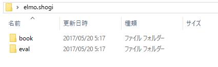
elmoの評価関数ファイルをやねうら王のフォルダに設置します。なお、以下コピーと記載されている部分は「切り取り」で問題ありません。
最終的に以下のようにフォルダを構成します。
やねうら王フォルダ
Ｌ YaneuraOu….exe
Ｌ eval (作成する)
Ｌ （評価関数ファイル；ここにコピー）
Ｌ book (作成する)
Ｌ standard_book.db(あれば作成；無くても良い)
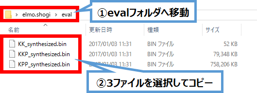
2018年版までは上記の通りの3ファイルを評価関数として利用しています。2019年度からは1ファイルとなる見通しです。
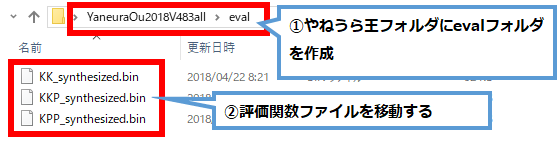
同様に、elmoの定跡ファイル(standard_book.db; ある場合)をやねうら王のフォルダに設置します。電王トーナメント版ではbookフォルダ直下にファイルがあります。
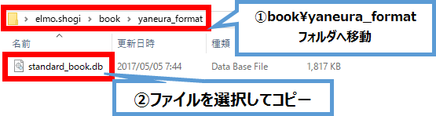
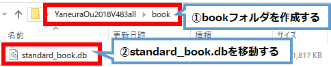
以下のようになります。
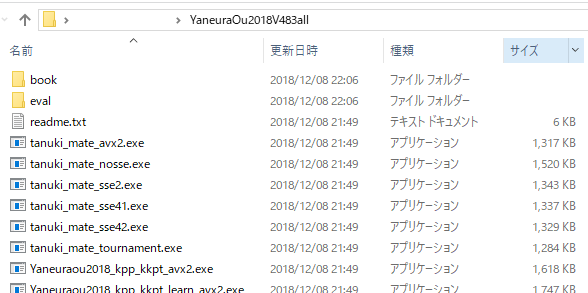
これで準備完了です。将棋対局ソフト(例：将棋所)から利用します。
対局／検討するために将棋対局ソフトである将棋所を例に使い方を説明します。将棋所のwebサイトへアクセスし、将棋所をダウンロードします。
将棋GUIも利用可能です。
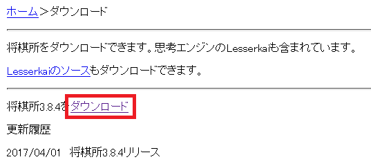
将棋対局ソフトは最新のものをダウンロードしてください。
こちらもShogidokoro.zipを展開し、Shogidokoro.exeを実行してください。まずエンジン管理を開きます。
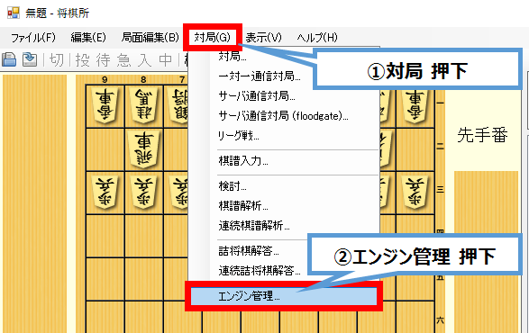
やねうら王(elmo)を設定します。
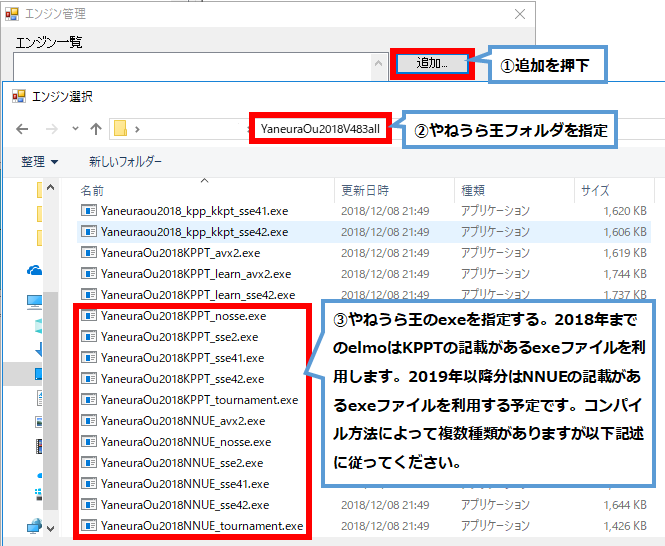
*_tournament.exeが最も高速に動作しますが、2013年6月以降に発表されたCPU(Intel Core 第4世代以降)でしか利用できません。あまり難しいことを考えずに以下高速に動作する順に選択して、開いてみてください。正常登録出来ればそれが使えます。
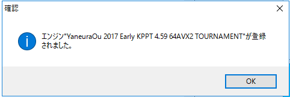
正常に登録された場合、上図のように登録されたという表示がされます。なお、やねうら王のフォルダにこのファイルを保存することで、将棋所でもelmoと表示されるようになります。
続いて、やねうら王(elmo)の設定をします。
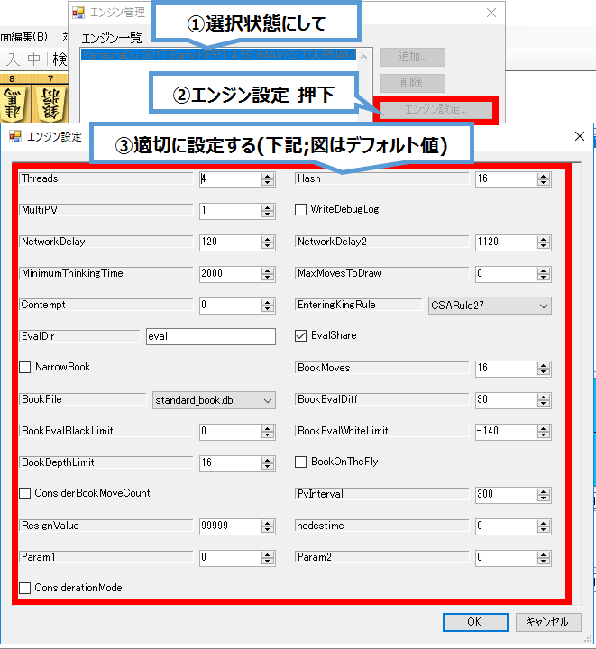
設定は以下変更を推奨します（変更の無いところは割愛しています）。
Threads: CPUコア数の2倍 Hash:
16(MB;メモリに余裕がある場合は32,64,128,256,512,1024...と2倍ずつ増やしてみてください)
NetworkDelay: 0 (都度想定されるNW遅延(ms)) NetworkDelay2: 0
(最大で想定されるNW遅延(ms))
MinimumThinkingTime: 1000 BookMoves: 200 (定跡を200手まで採用する)
BookDepthLimit: 0 ConsiderationMode:
検討時にチェック、対局時はチェックしない。
各項目についてはやねうら王のdocs\USI拡張コマンド.txtやdocs\解説.txt に説明があります。
これで全ての設定が完了しました。対局／検討／棋譜解析をelmoで実行することができます。対局からそれぞれのメニューが選べます。
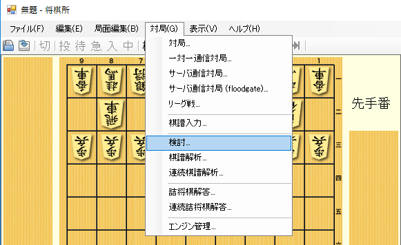
elmo開発者 瀧澤 誠